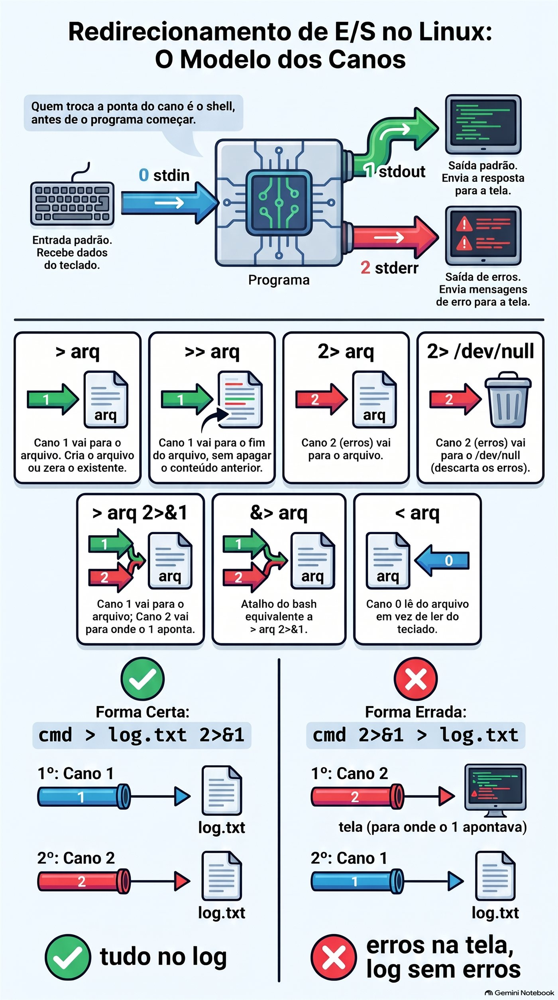
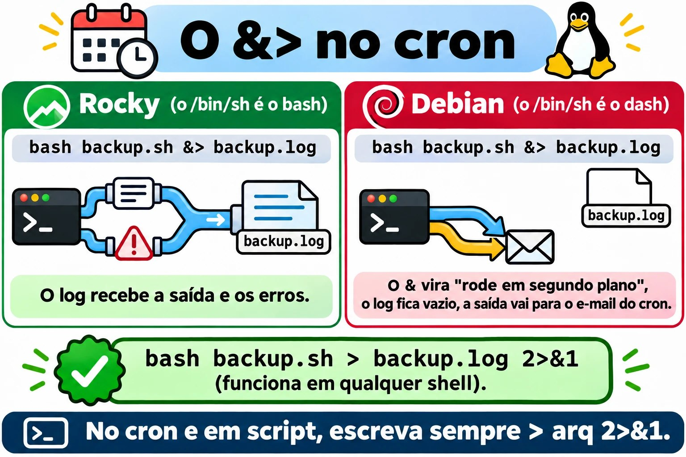
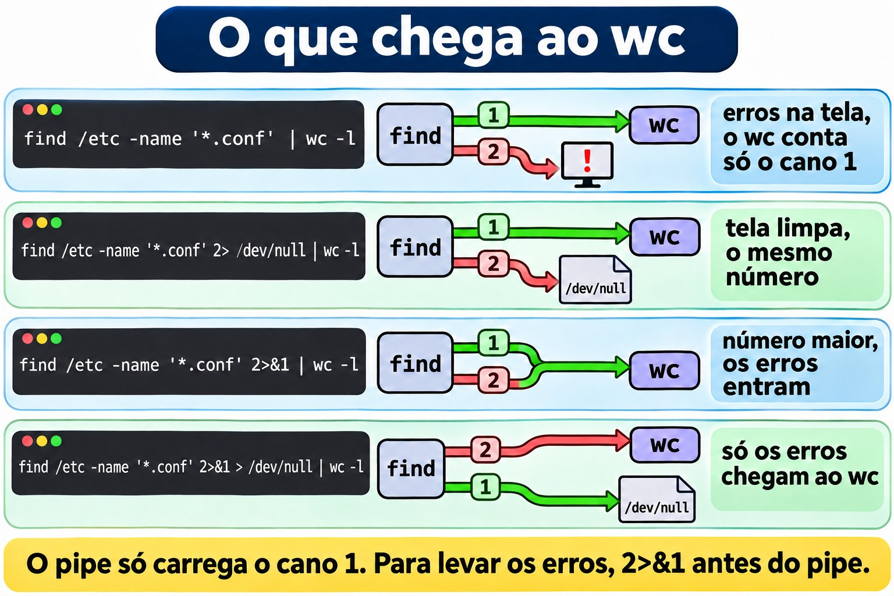
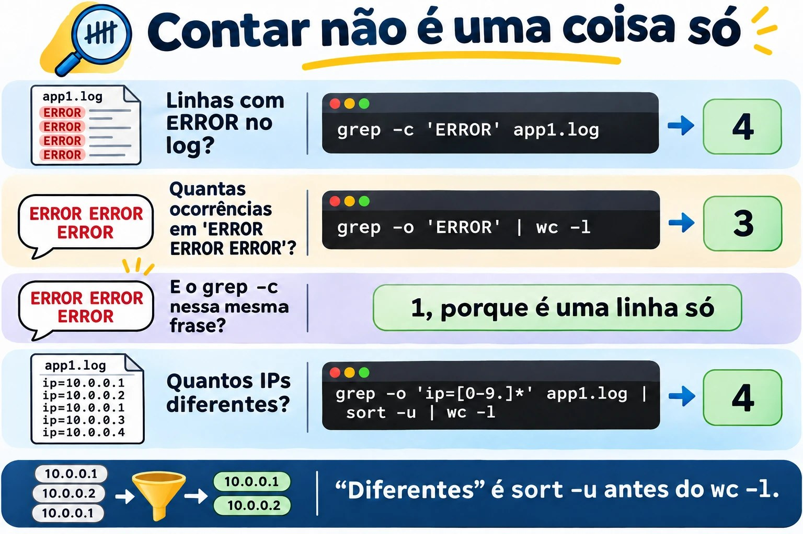
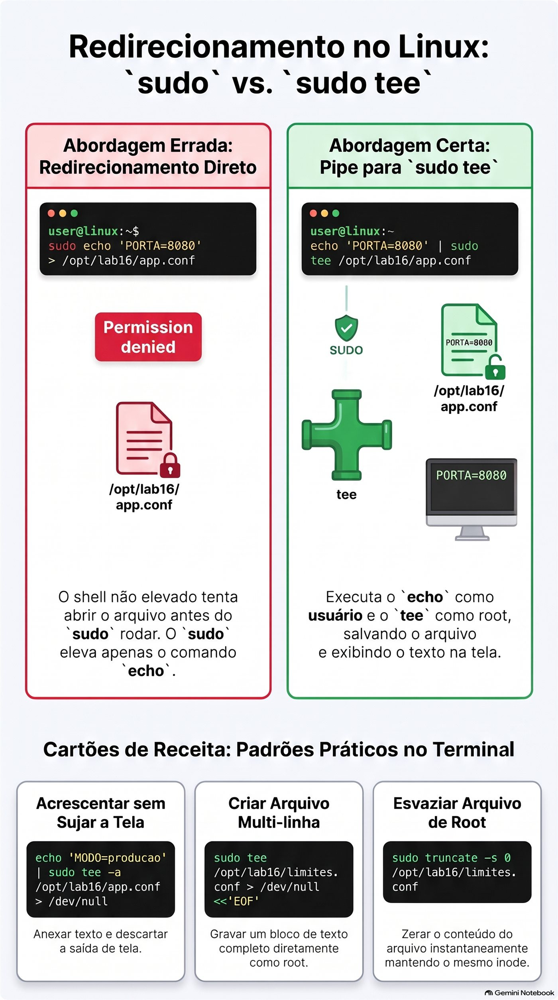
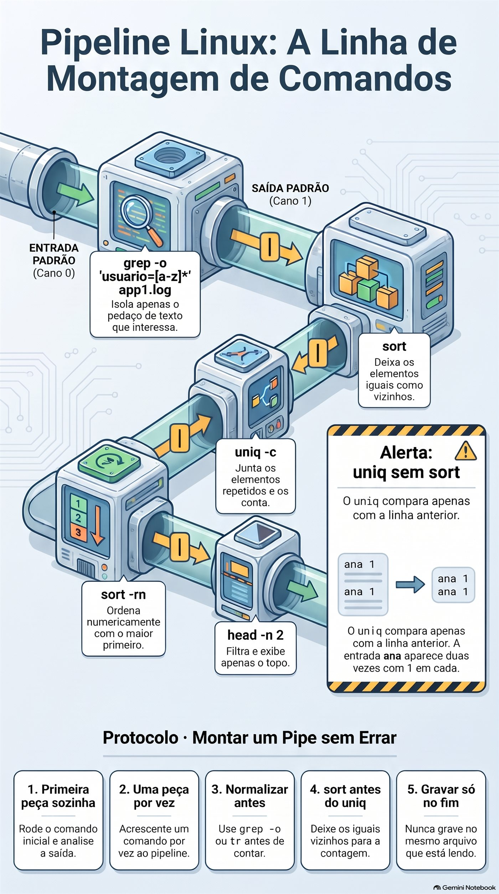
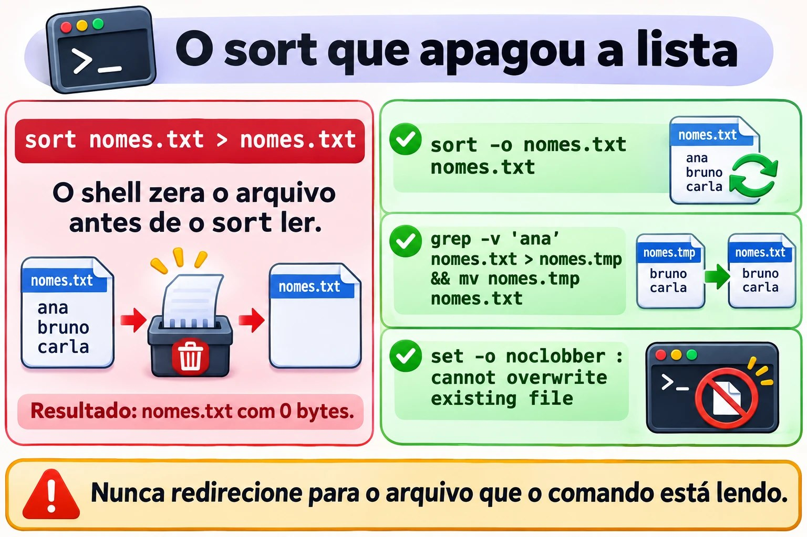

Aula 1.6 · Redirecionamentos e pipes
Você aprende a mandar a saída de qualquer comando para onde quiser: um arquivo, o fim de um arquivo, o lixo ou a entrada de outro comando. Com isso, uma pergunta como "quais IPs mais erraram a senha hoje?" vira uma linha só, e você para de copiar resultado da tela para o Bloco de Notas. Você também aprende os jeitos clássicos de destruir um arquivo com um único >, para nunca cair neles num servidor de cliente.
| Ficha | Aula 1.6 |
|---|---|
| Módulo | M1 · Linha de comando, aula 6 de 10 |
| Quando | Semana 2 |
| Ao final você consegue | Gravar a saída de um comando num arquivo sem apagar o que já havia; separar os erros da saída normal e jogar fora o que não interessa; criar um arquivo inteiro de uma vez com here-doc; escrever num arquivo do root sem levar Permission denied; montar pipes que respondem perguntas de verdade, como "quantos IPs diferentes" e "quem mais aparece"; ver e guardar a saída ao mesmo tempo com tee |
| Pré-requisitos | Aula 1.5, com o ~/lab13 ainda nas VMs |
| Tempo | Cerca de 2h30 |
| Snapshots | m1a6-inicio e m1a6-fim nas duas VMs |
1 · Aquecimento
Três perguntas, de cabeça, antes de ler qualquer coisa. Escreva as respostas; o Gabarito confere no fim.
- Na Aula 1.5, qual comando contava as linhas do
app1.logcomERROR, sem mostrá-las? Qual era o número? - O
grepnão achou nada e não escreveu nada. Como você descobre, logo depois, que ele não achou? - Palpite:
ls /etc/hostname /naoexistemostra duas linhas, uma normal e uma de erro. Para o shell, as duas saem pelo mesmo caminho?
2 · Por que importa
Quarta, 18h. Você precisa acrescentar o novo servidor de banco ao /etc/hosts de uma máquina de cliente. Como root, digita echo '10.0.5.40 pg03' > /etc/hosts. Um > só, onde deveriam ser dois. O arquivo agora tem uma linha: a sua. O localhost sumiu, e com ele os nomes dos outros servidores. Meia hora depois, o suporte liga: a aplicação não acha mais o banco antigo. Foi um caractere.
Segundo caso. Um backup roda todo dia às 2h pelo cron, com a saída indo para /var/log/backup.log. Todo dia o log diz backup iniciado e backup concluído. Três semanas depois, o cliente precisa restaurar um arquivo, e o backup está vazio. O tar reclamava toda noite que a pasta não existia, mas reclamava pelo canal de erros, e esse canal não ia para o log. Ninguém viu. Faltaram quatro caracteres na linha do cron: 2>&1.
Terceiro caso, o bom. Sexta, 17h, o gestor pergunta: "quantos IPs diferentes tentaram entrar como root esta semana, e quais os cinco que mais tentaram?". Sem pipes, você abre o log no editor e começa a contar. Com pipes, é uma linha:
sudo grep 'Failed password for root' /var/log/secure | grep -o 'from [0-9.]*' | sort | uniq -c | sort -rn | head -5Em dois segundos você tem a tabela para colar no e-mail. No fim desta aula, você lê essa linha sem esforço e monta outras iguais.
E o quarto caso, que pega todo mundo uma vez: sudo echo 'x' > /etc/arquivo responde Permission denied, mesmo com sudo. Até o fim da aula você sabe por quê, e o conserto tem três letras: tee.
3 · Modelo mental
Todo programa nasce com três canos. Pelo cano 0 entra o que ele lê; pelo cano 1 sai a resposta; pelo cano 2 saem os erros. Sem você dizer nada, o 0 vem do teclado, e o 1 e o 2 vão para a tela. Redirecionar é trocar a ponta de um cano. Quem troca é o shell, antes de o programa começar.
┌─────────────┐
teclado ───0────► │ programa │ ───1───► tela (saída: stdout)
(stdin) │ ls, grep… │ ───2───► tela (erros: stderr)
└─────────────┘Os nomes em inglês aparecem em toda documentação: stdin é o 0, stdout é o 1, stderr é o 2. Esses números se chamam descritores de arquivo.
Por que dois canos de saída, se os dois vão para a tela? Para você poder separá-los. A resposta vai para um arquivo, e os erros continuam na tela, ou vão para outro arquivo, ou para o lixo:
ls /etc/hostname /naoexiste > saida.txt 2> erros.txt
┌─────────────┐ ───1───► saida.txt /etc/hostname
│ ls │
└─────────────┘ ───2───► erros.txt ls: cannot access '/naoexiste'…O pipe liga o cano 1 de um programa ao cano 0 do próximo. Repare no que não entra no pipe:
grep 'ERROR' app1.log | wc -l
┌──────┐ ──1──►━━━━ pipe ━━━━►──0──┌──────┐ ──1──► tela: 4
│ grep │ │ wc │
└──────┘ ──2──► tela └──────┘
(os erros do grep passam por fora do pipe)A primeira ideia: o shell arruma os canos antes de o comando rodar. Quando você escreve > arquivo, o shell abre esse arquivo para escrita, e abrir com > quer dizer zerar. Só depois o comando começa. Duas consequências derrubam gente experiente:
sort nomes.txt > nomes.txtapaga a lista. O shell zera onomes.txt, e só depois osortvai ler, e encontra um arquivo vazio. A Quebra A faz você ver isso.sudo echo 'x' > /etc/arquivodáPermission denied. Osudoeleva só oecho. Quem abre o/etc/arquivoé o seu shell, rodando como você, antes de osudocomeçar.
A segunda ideia: o 2>&1 se lê da esquerda para a direita. Ele quer dizer "o cano 2 passa a apontar para onde o cano 1 aponta agora". Por isso a ordem importa:
cmd > log.txt 2>&1 cmd 2>&1 > log.txt
1º 1 ──► log.txt 1º 2 ──► tela (para onde o 1 apontava)
2º 2 ──► log.txt 2º 1 ──► log.txt
resultado: tudo no log resultado: erros na tela, log sem errosA primeira forma é a certa. A segunda é o erro do backup do segundo caso, e vira a Quebra B.
A terceira ideia: no Linux, o pipe carrega texto. Cada programa da fila faz uma coisa só, e bem: o grep peneira, o cut corta colunas, o sort ordena, o uniq junta repetidos vizinhos, o wc conta, o head pega o topo. Juntando peças pequenas, você monta a pergunta que quiser, como num lego.
log ─► grep ─► grep -o ─► sort ─► uniq -c ─► sort -rn ─► head
só as linhas só o pedaço conta maior primeiro o topo
que importam que interessaPonte Windows. O cmd e o PowerShell têm os mesmos >, >>, 2> e 2>&1, e também o pipe. A diferença está no que passa pelo pipe. No PowerShell, passam objetos com propriedades: você pede Sort-Object Length e pronto. No Linux, passam linhas de texto, e você corta o texto com cut antes de ordenar. Parece mais primitivo, mas funciona com qualquer programa já escrito, e não só com os que conhecem objetos. Uma pegadinha de quem vive nos dois mundos: no Windows PowerShell 5.1, o > grava o arquivo em UTF-16. Copie um arquivo desses para o Linux, e o grep pode responder binary file matches, ou simplesmente não achar nada.


4 · Conceito em camadas
Essencial
Redirecionamentos. O shell faz; o programa nem fica sabendo.
| Escreva | O que faz | Exemplo |
|---|---|---|
> arq | Manda a saída, o cano 1, para o arquivo. Cria o arquivo, ou zera o que já existe | ls /etc > lista.txt |
>> arq | Manda a saída para o fim do arquivo, sem apagar nada | date >> historico.txt |
2> arq | Manda os erros, o cano 2, para o arquivo | find /etc -name '*.conf' 2> erros.txt |
2> /dev/null | Joga os erros fora | find /etc -name '*.conf' 2> /dev/null |
> arq 2>&1 | Saída e erros no mesmo arquivo, nesta ordem | bash backup.sh > backup.log 2>&1 |
>> arq 2>&1 | O mesmo, acrescentando | A forma certa para o cron |
&> arq | Atalho do bash para > arq 2>&1 | bash backup.sh &> backup.log |
< arq | O cano 0 lê do arquivo, não do teclado | wc -l < app1.log |
<<'EOF' | Here-doc: o cano 0 lê o texto que vem até a linha EOF | No Passo 5 |
> arq, sem comando | Zera o arquivo, ou cria um vazio | > app.log |
O /dev/null é o buraco negro do Linux: tudo o que entra some, e quem lê dele recebe um arquivo vazio. Ele existe em qualquer Linux.
O pipe. É a barra vertical. Ele liga o cano 1 de um comando ao cano 0 do próximo, sem arquivo no meio:
grep 'ERROR' app1.log | wc -l
cut -d: -f7 /etc/passwd | sort | uniq -cOs filtros que vivem no meio dos pipes. Todos leem de um arquivo, se você der o nome, ou do cano 0, se vierem depois de um pipe.
| Comando | O que faz | Exemplo |
|---|---|---|
sort | Ordena as linhas em ordem alfabética | sort nomes.txt |
sort -n | Ordena por número: 9 antes de 10 | sort -n tamanhos.txt |
sort -r | Inverte a ordem | sort -rn: o maior primeiro |
sort -u | Ordena e tira as linhas repetidas | sort -u ips.txt |
sort -t: -k3 -n | Ordena pela 3ª coluna, com colunas separadas por : | sort -t: -k3 -n /etc/passwd |
uniq | Junta linhas repetidas vizinhas: precisa de sort antes | Sempre depois de um sort |
uniq -c | Junta e conta quantas eram | Sempre depois de um sort |
cut -d: -f1 | Corta a 1ª coluna, com colunas separadas por : | cut -d: -f1 /etc/passwd |
cut -d' ' -f3 | Corta a 3ª coluna, separada por espaço | cut -d' ' -f3 app1.log |
tr -s ' ' | Junta espaços repetidos num só | Antes de um cut -d' ' |
grep -o | Mostra só o pedaço que casou, um por linha | grep -o 'ip=[0-9.]*' app1.log |
wc -l | Conta as linhas que chegam | No fim do pipe |
head -n 5 | Só as cinco primeiras | Depois de um sort -rn: o top 5 |
tee arq | Mostra na tela e grava no arquivo | No Passo 8 |
tee -a arq | O mesmo, acrescentando | Com sudo, escreve em arquivo do root |
Duas receitas que você vai usar todo dia: sort | uniq dá o mesmo que sort -u, e sort | uniq -c | sort -rn é a receita do ranking.
Ponte Windows
| Linux | cmd | PowerShell |
|---|---|---|
cmd > arq | cmd > arq | cmd > arq ou Out-File arq |
cmd >> arq | cmd >> arq | cmd >> arq ou Out-File arq -Append |
cmd 2> arq | cmd 2> arq | cmd 2> arq |
cmd > arq 2>&1 | cmd > arq 2>&1 | cmd > arq 2>&1, ou *> arq para todos os fluxos |
/dev/null | nul | $null ou Out-Null |
tee arq | Não tem | Tee-Object arq |
sort | sort | Sort-Object |
sort -u | Não tem | Sort-Object -Unique |
uniq -c | Não tem | Group-Object |
cut -d: -f1 | Não tem | ForEach-Object { $_.Split(':')[0] } |
wc -l | find /c /v "" | Measure-Object -Line |
Here-doc <<'EOF' | Não tem | Here-string @' … '@ |
Avançado
set -o noclobberfaz o>recusar sobrescrever um arquivo que já existe:cannot overwrite existing file. Para forçar, escreva>|. Desliga comset +o noclobber. Não protege o>>, que nunca apaga.|&é o atalho do bash para2>&1 |: manda saída e erros juntos para o próximo comando.${PIPESTATUS[@]}eset -o pipefail. O$?de um pipe é o do último comando.grep x naoexiste.txt | wc -lmostra um erro e o número0, e o$?é 0, porque owcfuncionou. Logo depois,echo ${PIPESTATUS[@]}mostra2 0: o código de cada peça. Em script,set -o pipefailfaz o pipe falhar se qualquer peça falhar. Você usa isso no módulo de scripts.<<<, a here-string, entrega uma frase curta no cano 0:wc -w <<< 'uma frase curta'responde 3.<<-EOFtira os tabs do começo de cada linha. Serve para recuar um here-doc dentro de um script.<(comando), a substituição de processo, entrega a saída de um comando como se fosse um arquivo:diff <(sort ontem.txt) <(sort hoje.txt)compara duas listas sem criar arquivos temporários. É o jeito clássico de comparar os pacotes de dois servidores.xargstransforma linhas em argumentos:find ~/lab13 -name '*.log' | xargs wc -lconta as linhas de todos os logs de uma vez. Com nomes que têm espaço, usefind … -print0 | xargs -0 …. O Passo 9 mostra por quê.exec > arq 2>&1, dentro de um script, manda para o arquivo tudo o que vem depois. Fica para o módulo de scripts.
5 · Rocky × Debian
O bash é o mesmo nas duas, e todo redirecionamento desta aula funciona igual no terminal. As diferenças aparecem em três lugares: no /bin/sh, nos programas que você põe no pipe e na ordem do sort.
| Ponto | Rocky 9 | Debian 13 |
|---|---|---|
Quem é o /bin/sh | O próprio bash | O dash, um shell menor e mais rápido |
&> num script #!/bin/sh ou numa linha do cron | Funciona | Quebra em silêncio: o comando vai para segundo plano, e o arquivo fica vazio |
| Contar pacotes instalados | rpm -qa, contado com wc -l | dpkg -l, só as linhas que começam com ii, contadas com wc -l |
| Gerenciador que reclama no pipe | O dnf não reclama | O apt escreve WARNING: apt does not have a stable CLI interface no cano 2 |
| Logs para montar pipes | /var/log/secure e /var/log/messages | journalctl, que já sai pronto para o pipe |
Ordem do sort | Depende do idioma, na variável LANG | Igual |
Confira com ls -l /bin/sh nas duas: algo como /bin/sh -> bash na Rocky e /bin/sh -> dash na Debian.
A segunda linha da tabela é a mais traiçoeira. O cron roda cada linha com /bin/sh. Na Debian, bash backup.sh &> backup.log vira duas coisas: bash backup.sh &, que roda em segundo plano com a saída indo para o e-mail do cron, que quase ninguém lê, e > backup.log, que só zera o arquivo. O backup roda, o log fica vazio todo dia, e ninguém entende. A regra prática: no terminal, use &> à vontade. Em script e no cron, escreva sempre > arq 2>&1, que funciona em qualquer shell.
O aviso do apt é o exemplo perfeito de por que existem dois canos. Na Debian, compare:
apt list --installed | wc -l
apt list --installed 2> /dev/null | wc -lOs dois números são iguais, e só o primeiro mostra o aviso na tela. O aviso saiu pelo cano 2 e passou por fora do pipe. O wc nunca o viu.


&> funciona na Rocky e quebra em silêncio no cron da Debian: em script e no cron, escreva > arq 2>&1.6 · Lab guiado
Faça tudo nas duas VMs, a não ser quando o passo disser só uma. Os arquivos ficam em ~/lab13/pipes, e a matéria-prima é o app1.log da Aula 1.5. Em cada passo, quando aparecer Preveja, escreva a resposta antes de apertar Enter.
Passo 1 · Preparar
No nó Proxmox:
qm snapshot 201 m1a6-inicio
qm snapshot 202 m1a6-inicioEm cada VM:
mkdir -p ~/lab13/pipes
cd ~/lab13/pipes
wc -l ~/lab13/logs/app1.log
cp ~/lab13/logs/app1.log .
ls -lO wc deve responder 20 /home/rodrigo/lab13/logs/app1.log. Se o número for outro, ou o arquivo não existir, volte ao Passo 1 da Aula 1.5 e crie o app1.log de novo. A cópia local existe para você poder errar à vontade: o original fica guardado em ~/lab13/logs.
Passo 2 · > e >>: o arquivo que some e o que cresce
echo 'primeira' > notas.txt
cat notas.txt
echo 'segunda' > notas.txtPreveja. O que o próximo cat vai mostrar: uma linha ou duas?
cat notas.txtSó segunda. O segundo > zerou o arquivo antes de o echo escrever. Agora acrescente:
echo 'terceira' >> notas.txt
date >> notas.txt
cat -n notas.txtTrês linhas: segunda, terceira e a data. O >> nunca apaga.
Agora a promessa da Aula 1.4: esvaziar um arquivo sem trocar o inode.
ls -li notas.txt
> notas.txt
ls -li notas.txt
> novo-vazio.txt
ls -l novo-vazio.txtO número do inode, na primeira coluna, é o mesmo antes e depois, e o tamanho caiu para 0. É assim que se esvazia um log que um programa está usando: o programa continua escrevendo no mesmo arquivo, e o espaço volta na hora. O > novo-vazio.txt mostra o outro uso: sem comando, o > cria um arquivo vazio.
O mesmo efeito existe como comando, e isso vai importar no Passo 8:
echo 'de novo' > notas.txt
truncate -s 0 notas.txt
ls -l notas.txtO truncate -s 0 deixa o arquivo com tamanho zero, igual ao > sozinho.
Para a Decida, faça uma cópia do hosts do sistema. Você mexe na cópia, nunca no original:
cp /etc/hosts hosts.txt
wc -l hosts.txtDecida 1 · O /etc/hosts. Cenário: você precisa acrescentar a linha 10.0.5.40 pg03 ao fim do hosts.txt, sem perder nada do que já existe. Qual comando?
- A)
echo '10.0.5.40 pg03' > hosts.txt - B)
echo '10.0.5.40 pg03' >> hosts.txt - C)
echo '10.0.5.40 pg03' < hosts.txt - D)
cat '10.0.5.40 pg03' >> hosts.txt
Escolha a letra antes de olhar a tabela.
| Se você marcou | Resultado | Por quê |
|---|---|---|
| A | ❌ Errada | O > zera o arquivo antes de o echo rodar, e sobra só a linha nova. É o caso da quarta-feira da seção 2. |
| B | ✅ Certa | O >> acrescenta no fim. O wc -l passa a mostrar uma linha a mais, e o tail -n 2 mostra a linha nova no fim. |
| C | ❌ Errada | O < liga o arquivo à entrada do echo, e o echo nunca lê a entrada. A linha aparece na tela, e o arquivo fica igual. |
| D | ❌ Errada | O cat procura um arquivo chamado 10.0.5.40 pg03, responde No such file or directory, e nada é acrescentado. |
Para fixar: antes de apertar Enter numa linha com >, leia o > em voz alta como "zera". Se não era isso que você queria, são dois.
Rode a B e confira:
echo '10.0.5.40 pg03' >> hosts.txt
tail -n 2 hosts.txt
wc -l hosts.txtPasso 3 · O cano 2: os erros não vão para o arquivo
ls /etc/hostname /naoexisteDuas linhas: o nome do arquivo e o erro. Agora mande a saída para um arquivo.
Preveja. Com > saida.txt, o que ainda aparece na tela?
ls /etc/hostname /naoexiste > saida.txt
cat saida.txtO erro continua na tela: ls: cannot access '/naoexiste': No such file or directory. O saida.txt tem só /etc/hostname. O > desviou o cano 1; o cano 2 continuou apontando para a tela. Agora separe os dois e depois jogue os erros fora:
ls /etc/hostname /naoexiste 2> erros.txt
cat erros.txt
ls /etc/hostname /naoexiste > saida.txt 2> erros.txt
ls /etc/hostname /naoexiste 2> /dev/nullO último é o mais usado na vida real. Um exemplo que você vai repetir muito: o find como usuário comum reclama de cada pasta que ele não pode abrir.
find /etc -name '*.conf' | wc -l
find /etc -name '*.conf' 2> /dev/null | wc -lO primeiro enche a tela de find: '/etc/sudoers.d': Permission denied e de outras pastas fechadas, e no fim mostra um número. O segundo mostra só o número. A lista exata de pastas muda entre a Rocky e a Debian.
Decida 2 · O número que não mudou. Cenário: você esperava que o primeiro número fosse maior, porque as linhas de erro "estavam na saída". Mas os dois números são iguais. Por quê?
- A) O
wcignora as linhas que começam comfind: - B) Os erros saíram pelo cano 2, que passa por fora do pipe; o
wcrecebeu só o cano 1 - C) O
2> /dev/nullnão funciona com ofind - D) A segunda execução usou um cache, por isso deu igual
Escolha a letra antes de olhar a tabela.
| Se você marcou | Resultado | Por quê |
|---|---|---|
| A | ❌ Errada | O wc não lê o conteúdo para decidir o que contar: conta toda linha que chega. As linhas de erro simplesmente não chegaram. |
| B | ✅ Certa | O pipe liga só o cano 1. Os erros foram direto para a tela, nos dois casos. O wc contou exatamente a mesma coisa. |
| C | ❌ Errada | Funciona: na segunda vez, os erros sumiram da tela. O número igual tem outra causa. |
| D | ❌ Errada | Não há cache nenhum. O find percorreu as pastas de novo, e a lista de arquivos era a mesma. |
Para fixar: o pipe só carrega o cano 1. Se você quiser os erros dentro do pipe, escreva 2>&1 antes do pipe.
Confira:
find /etc -name '*.conf' 2>&1 | wc -lAgora o número é maior: entraram as linhas de erro.
Passo 4 · Saída e erros juntos, e a ordem que muda tudo
ls /etc/hostname /naoexiste > tudo.txt 2>&1
cat tudo.txt
ls /etc/hostname /naoexiste &> tudo2.txt
cat tudo2.txtOs dois arquivos têm as duas linhas. O ls costuma escrever o erro primeiro, porque ele reclama dos nomes que não existem antes de listar os que existem.
Preveja. Agora a ordem invertida. Onde vai aparecer o erro?
ls /etc/hostname /naoexiste 2>&1 > errado.txt
cat errado.txtO erro aparece na tela, e o errado.txt tem só /etc/hostname. Volte ao desenho da seção 3: no momento do 2>&1, o cano 1 ainda apontava para a tela, então o 2 foi para a tela. Só depois o 1 foi para o arquivo.
A mesma regra, usada a seu favor: contar só os erros do find.
find /etc -name '*.conf' 2>&1 > /dev/null | wc -lLeia da esquerda para a direita. O 2 vai para onde o 1 aponta agora, o pipe. Depois o 1 vai para o lixo. Só os erros chegam ao wc: algo como 3 a 6, conforme a VM.
Por fim, o acumulado, que é a forma do cron:
date >> exec.log 2>&1
ls /naoexiste >> exec.log 2>&1
date >> exec.log 2>&1
cat exec.logTrês linhas: a data, o erro e a data. Cada execução acrescenta, nada se perde, e os erros ficam registrados na ordem em que aconteceram.
Decida 3 · Guardar tudo. Cenário: você vai rodar um comando demorado e quer a saída e os erros em upd.log, para ler depois com calma. Qual linha?
- A)
cmd 2>&1 > upd.log - B)
cmd > upd.log 2>1 - C)
cmd > upd.log 2>&1 - D)
cmd > upd.log 2> upd.log
Escolha a letra antes de olhar a tabela.
| Se você marcou | Resultado | Por quê |
|---|---|---|
| A | ❌ Errada | A ordem está invertida: o 2 vai para a tela, para onde o 1 apontava, e só a saída vai para o arquivo. |
| B | ❌ Errada | Sem o &, o 1 é um nome de arquivo. Os erros vão para um arquivo chamado 1. Teste com ls /naoexiste > upd.log 2>1 e depois ls -l 1. |
| C | ✅ Certa | Primeiro o 1 vai para o upd.log; depois o 2 vai para onde o 1 aponta. Tudo no mesmo arquivo, na ordem certa. |
| D | ❌ Errada | Os dois canos abrem o mesmo arquivo separadamente, cada um escrevendo a partir do começo. Um escreve por cima do outro, e o texto sai embaralhado. Teste com ls /etc/hostname /naoexiste > d.txt 2> d.txt e cat d.txt. |
Para fixar: o & em 2>&1 diz "é um cano, não um arquivo". E a ordem é sempre: primeiro o destino, depois o 2>&1.
Se você testou a B e a D, limpe: rm -v 1 d.txt.


wc conta depende de para onde vão os erros.Passo 5 · A entrada: < e o here-doc
wc -l app1.log
wc -l < app1.logO primeiro responde 20 app1.log; o segundo, só 20. Com o <, quem abre o arquivo é o shell, e o wc recebe só o conteúdo, sem saber o nome. É a forma que você usa em script, quando quer só o número: total=$(wc -l < app1.log).
Alguns programas só sabem ler do cano 0. O tr, que troca caracteres, é o mais comum:
tr 'a-z' 'A-Z' app1.log
tr 'a-z' 'A-Z' < app1.log | head -n 3O primeiro responde tr: extra operand 'app1.log'. O segundo mostra as três primeiras linhas em maiúsculas. Repare em CONEXãO: o tr troca só as letras de a a z, sem acento.
Agora o here-doc, que você usa desde a Aula 1.5 como receita:
cat > app.conf <<'EOF'
# configuração da aplicação
PORTA=8080
MODO=producao
LOG=/var/log/app/app.log
EOF
cat -n app.confCada pedaço tem uma função. O <<'EOF' diz ao shell: leia as próximas linhas até achar uma linha só com EOF e entregue tudo no cano 0. O cat sem nome de arquivo lê do cano 0 e escreve no cano 1. O > app.conf manda o cano 1 para o arquivo. A palavra EOF é só um costume; vale qualquer palavra, desde que a linha final tenha só ela, sem espaço antes nem depois.
É o jeito mais seguro de colar uma configuração pronta num servidor por SSH: nada de editor, nada de linha cortada no meio.
Preveja. As duas versões abaixo só diferem nas aspas do EOF. O que cada uma mostra?
cat <<EOF
Usuário: $USER
Pasta: $HOME
Hoje: $(date +%F)
EOF
cat <<'EOF'
Usuário: $USER
Pasta: $HOME
Hoje: $(date +%F)
EOFA primeira troca cada $ pelo valor: algo como Usuário: rodrigo, Pasta: /home/rodrigo e a data de hoje. A segunda mostra o texto exatamente como foi escrito, com os cifrões. Sem aspas, o shell preenche as variáveis; com aspas, ele não mexe em nada.
Decida 4 · O script que perdeu o $1. Cenário: você cria um script pelo terminal e testa:
cat > saudacao.sh <<EOF
#!/bin/bash
echo "Olá, $1"
EOF
bash saudacao.sh RodrigoA resposta é só Olá, , sem o nome. Por quê?
- A) O script precisa de
chmod +xpara ler o$1 - B) Sem aspas no
EOF, o shell trocou o$1pelo valor dele na hora de criar o arquivo, e o valor era vazio - C) O here-doc não aceita aspas duplas dentro
- D) O
$1só funciona quando o script roda como./saudacao.sh
Escolha a letra antes de olhar a tabela.
| Se você marcou | Resultado | Por quê |
|---|---|---|
| A | ❌ Errada | Com bash saudacao.sh, o script roda sem chmod. O problema está dentro do arquivo, não na permissão. |
| B | ✅ Certa | O cat saudacao.sh mostra echo "Olá, ": o $1 sumiu antes de o script existir. No seu terminal, o $1 estava vazio. |
| C | ❌ Errada | O here-doc aceita qualquer texto, com aspas simples ou duplas. |
| D | ❌ Errada | O $1 é o primeiro argumento nos dois jeitos de rodar. |
Para fixar: here-doc que grava script ou configuração com $ dentro leva sempre <<'EOF', com aspas. Sem aspas, só quando você quer que o shell preencha as variáveis.
Conserte e teste:
cat saudacao.sh
cat > saudacao.sh <<'EOF'
#!/bin/bash
echo "Olá, $1"
EOF
cat saudacao.sh
bash saudacao.sh RodrigoAgora a resposta é Olá, Rodrigo.
Passo 6 · Pipes: contar, ordenar, juntar
Comece pelo que você já sabe, de dois jeitos:
grep -c 'ERROR' app1.log
grep 'ERROR' app1.log | wc -lOs dois respondem 4. Agora a dúvida que ficou da Aula 1.5, linhas contra ocorrências:
echo 'ERROR ERROR ERROR' | grep -c 'ERROR'
echo 'ERROR ERROR ERROR' | grep -o 'ERROR' | wc -lO primeiro responde 1, porque é uma linha. O segundo responde 3: o grep -o põe cada ocorrência numa linha própria, e o wc -l conta essas linhas.
Agora uma pergunta de verdade: quais IPs aparecem no log, e quantas vezes? Monte o pipe uma peça por vez, olhando a saída a cada passo:
grep -o 'ip=[0-9.]*' app1.log
grep -o 'ip=[0-9.]*' app1.log | sort
grep -o 'ip=[0-9.]*' app1.log | sort | uniq -cO [0-9.] quer dizer "um dígito ou um ponto", e o *, "quantos vierem". Expressões regulares têm aula própria; por enquanto, use como receita. O último comando mostra algo como:
1 ip=10.0.5.10
1 ip=10.0.5.21
1 ip=10.0.5.30
3 ip=203.0.113.50E quantos IPs diferentes:
grep -o 'ip=[0-9.]*' app1.log | sort -u | wc -lResponde 4. Essa é a contagem que a Aula 1.5 prometeu.
Preveja. Agora os usuários, mas sem o sort. Quantas vezes a palavra ana vai aparecer na saída do segundo comando?
grep -o 'usuario=[a-z]*' app1.log
grep -o 'usuario=[a-z]*' app1.log | uniq -cAlgo como:
1 usuario=ana
2 usuario=root
1 usuario=admin
1 usuario=bruno
1 usuario=ana
1 usuario=rodrigoA ana aparece duas vezes, com 1 em cada. O uniq só compara uma linha com a anterior: as duas linhas do root estavam juntas e viraram uma; as duas da ana estavam separadas e ficaram separadas. Com o sort antes, os iguais ficam vizinhos:
grep -o 'usuario=[a-z]*' app1.log | sort | uniq -c
grep -o 'usuario=[a-z]*' app1.log | sort | uniq -c | sort -rn
grep -o 'usuario=[a-z]*' app1.log | sort | uniq -c | sort -rn | head -n 2O último é a receita do ranking, o top 2: root e ana, com 2 cada.
Decida 5 · Quantos IPs diferentes. Cenário: o gestor quer saber quantos IPs diferentes aparecem no app1.log. Qual comando dá a resposta certa, hoje e em qualquer log?
- A)
grep -c 'ip=' app1.log - B)
grep -o 'ip=[0-9.]*' app1.log | uniq | wc -l - C)
grep -o 'ip=[0-9.]*' app1.log | sort -u | wc -l - D)
grep -o 'ip=[0-9.]*' app1.log | wc -l
Escolha a letra antes de olhar a tabela.
| Se você marcou | Resultado | Por quê |
|---|---|---|
| A | ❌ Errada | Responde 6: conta as linhas que têm IP, e o 203.0.113.50 entra três vezes. |
| B | ❌ Incompleta | Aqui dá 4 por sorte, porque as três linhas do 203.0.113.50 estão juntas. Num log real, com os IPs intercalados, a conta sai maior que a verdade. |
| C | ✅ Certa | O sort -u ordena e tira os repetidos, onde quer que estejam. O wc -l conta o que sobrou: 4. |
| D | ❌ Errada | Responde 6: conta todas as ocorrências, com repetição. |
Para fixar: "diferentes" é sort -u, ou sort e depois uniq, e só então wc -l. O uniq sozinho só enxerga o vizinho.


Passo 7 · Colunas com cut, e o espaço duplo
O /etc/passwd é o arquivo perfeito para treinar: uma linha por usuário, sete colunas separadas por :. Usuário, senha, que hoje é só um x, UID, GID, comentário, pasta pessoal e shell. Os detalhes ficam para a aula de usuários.
head -n 3 /etc/passwd
cut -d: -f1 /etc/passwd | head -n 5
cut -d: -f1,7 /etc/passwd | tail -n 3
cut -d: -f7 /etc/passwd | sort | uniq -c | sort -rn
sort -t: -k3 -n /etc/passwd | tail -n 3O quarto comando responde "quais shells os usuários têm, e quantos de cada". Algo como, na Rocky:
17 /sbin/nologin
2 /bin/bash
1 /sbin/shutdown
1 /sbin/halt
1 /bin/syncNa Debian, o mais comum é /usr/sbin/nologin, e os números mudam. O que importa: só quem tem um shell de verdade, como o /bin/bash, consegue entrar e digitar comandos. Essa é uma pergunta de auditoria que você vai responder em servidor de cliente. O último comando ordena pelo UID, a terceira coluna, como número, e mostra os três maiores: o rodrigo e, no fim, o nobody, com 65534.
Agora o app1.log, cujas colunas são separadas por espaço. A terceira é o nível:
cut -d' ' -f3 app1.log | sort | uniq -cAlgo como:
1 error
4 ERROR
11 INFO
4 WARNA ordem depende do idioma do sistema: com LANG=C, o ERROR vem primeiro e o error por último.
Preveja. A quarta coluna deveria ser o serviço: web:, db:, auth:. O que aparece nas seis primeiras linhas?
cut -d' ' -f4 app1.log | head -n 6
cut -d' ' -f4 app1.log | head -n 6 | cat -AQuatro linhas vazias e duas com auth:. O cat -A confirma: quatro $ sozinhos. Olhe o log de novo: depois de INFO e de WARN há dois espaços, para alinhar com o ERROR. Para o cut, cada espaço separa uma coluna, então entre os dois espaços existe uma coluna vazia. Nas linhas de ERROR, com um espaço só, a quarta coluna é o serviço.
O conserto é juntar os espaços antes de cortar:
tr -s ' ' < app1.log | cut -d' ' -f4 | head -n 6Agora sim: web:, db:, web:, auth:, auth:, auth:. Na aula de awk, você verá que ele já trata vários espaços como um só.
Decida 6 · O relatório por nível. Cenário: o gestor quer quantas linhas há de cada nível no app1.log, e o error em minúsculas deve contar junto com o ERROR. Qual comando?
- A)
cut -d' ' -f3 app1.log | uniq -c - B)
cut -d' ' -f3 app1.log | sort | uniq -c - C)
cut -d' ' -f3 app1.log | tr 'a-z' 'A-Z' | sort | uniq -c - D)
cut -d' ' -f4 app1.log | sort | uniq -c
Escolha a letra antes de olhar a tabela.
| Se você marcou | Resultado | Por quê |
|---|---|---|
| A | ❌ Errada | Sem sort, o uniq junta só os vizinhos, e o INFO aparece picado em várias linhas. |
| B | ❌ Incompleta | A contagem é certa, mas mostra error e ERROR separados. O gestor pediu juntos. |
| C | ✅ Certa | O tr deixa tudo em maiúsculas antes de ordenar e contar: 5 ERROR, 11 INFO e 4 WARN. |
| D | ❌ Errada | A quarta coluna é o serviço, e vem vazia nas linhas com espaço duplo. Nem é o nível. |
Para fixar: normalize antes de contar. Maiúsculas com tr 'a-z' 'A-Z', espaços com tr -s ' ', e sempre sort antes de uniq. Outra forma da C: sort -f com uniq -ci, que ignoram maiúsculas.
Passo 8 · tee, e escrever onde só o root escreve
O tee é um T de encanamento: copia para um arquivo tudo o que passa e deixa o fluxo seguir.
grep 'ERROR' app1.log | tee erros-hoje.txt | wc -l
cat erros-hoje.txt
grep 'WARN' app1.log | tee -a erros-hoje.txt
wc -l erros-hoje.txtO primeiro comando mostra só o 4, mas o arquivo ficou com as quatro linhas. O terceiro mostra os avisos na tela e os acrescenta ao arquivo, que fica com 8 linhas. Na vida real, é assim que você acompanha um comando longo na tela e guarda tudo para o chamado ao mesmo tempo.
Agora o caso do sudo. Crie uma pasta que só o root pode escrever:
sudo mkdir -p /opt/lab16
ls -ld /opt/lab16
echo 'PORTA=8080' > /opt/lab16/app.confAlgo como bash: /opt/lab16/app.conf: Permission denied. Normal: a pasta é do root.
Preveja. E com sudo na frente?
sudo echo 'PORTA=8080' > /opt/lab16/app.confO mesmo Permission denied. Volte à primeira ideia da seção 3: o seu shell, rodando como você, tenta abrir o arquivo para o > antes de o sudo começar. O sudo só elevaria o echo, que nem chega a rodar.
O conserto é pedir a um programa que rode como root para abrir o arquivo. O tee faz isso:
echo 'PORTA=8080' | sudo tee /opt/lab16/app.conf
echo 'MODO=producao' | sudo tee -a /opt/lab16/app.conf > /dev/null
cat /opt/lab16/app.conf
ls -l /opt/lab16/app.confO primeiro mostra PORTA=8080 na tela: é a cópia que o tee deixa passar. No segundo, o > /dev/null joga fora essa cópia, e a tela fica limpa. Esse > pode ser seu, sem root, porque escreve no /dev/null, não no arquivo do root. O arquivo final tem duas linhas e pertence ao root.
Para um arquivo inteiro como root, junte o sudo tee com o here-doc:
sudo tee /opt/lab16/limites.conf > /dev/null <<'EOF'
# limites da aplicação
MAX_CONEXOES=200
TIMEOUT=30
EOF
cat /opt/lab16/limites.confE para esvaziar um arquivo do root, o comando que você viu no Passo 2:
sudo truncate -s 0 /opt/lab16/limites.conf
ls -l /opt/lab16/limites.confExiste também o sudo sh -c 'echo PORTA=8080 > /opt/lab16/app.conf', que roda um shell inteiro como root. Funciona, mas as aspas se complicam rápido. Prefira o tee.
Decida 7 · O /var cheio. Cenário: o /var está com 98%. O /var/log/app/app.log tem 4 GB, e a aplicação está escrevendo nele agora. Você precisa liberar espaço já, sem parar a aplicação, e o histórico do log pode ir embora. Qual comando?
- A)
sudo rm /var/log/app/app.log - B)
sudo > /var/log/app/app.log - C)
sudo truncate -s 0 /var/log/app/app.log - D)
sudo mv /var/log/app/app.log /tmp/
Escolha a letra antes de olhar a tabela.
| Se você marcou | Resultado | Por quê |
|---|---|---|
| A | ❌ Errada | É a Aula 1.4: o rm tira o nome, mas a aplicação continua segurando o inode. O espaço não volta, e ela segue escrevendo num arquivo sem nome. |
| B | ❌ Errada | Quem faz o > é o seu shell, sem root: Permission denied, e nada muda. O sudo sem comando nem chega a rodar. |
| C | ✅ Certa | O truncate roda como root e zera o mesmo inode. O espaço volta na hora, e a aplicação continua escrevendo no mesmo arquivo. |
| D | ❌ Errada | Se o /tmp estiver no mesmo sistema de arquivos, nada muda: é a Aula 1.4. Se estiver em outro, o mv copia 4 GB e apaga o original, e o espaço do /var continua preso, porque a aplicação ainda segura o inode. |
Para fixar: para zerar um arquivo do root, use sudo truncate -s 0. Para escrever num arquivo do root, mande o texto pelo pipe para sudo tee, ou sudo tee -a para acrescentar. E nunca use rm num log aberto.


Passo 9 · xargs: de linhas para argumentos
O pipe entrega texto no cano 0. Mas muitos comandos, como wc, ls e rm, esperam nomes de arquivo como argumentos, e não no cano 0. O xargs faz essa ponte: lê linhas e as entrega como argumentos ao comando que vem depois dele.
find ~/lab13 -name '*.log' | wc -l
find ~/lab13 -name '*.log' | xargs wc -lO primeiro conta quantos arquivos .log existem, porque o wc recebeu a lista de nomes como texto. O segundo conta as linhas dentro de cada arquivo, com um total no fim, porque o wc recebeu os nomes como argumentos, como se você os tivesse digitado.
Agora a armadilha. Crie um log com espaço no nome, como o relatorio final.txt da Aula 1.3:
echo 'teste' > ~/lab13/pipes/'relatorio final.log'
find ~/lab13 -name '*.log' | xargs wc -lAlgo como wc: /home/rodrigo/lab13/pipes/relatorio: No such file or directory e wc: final.log: No such file or directory. O xargs separa os argumentos por espaço, e um nome virou dois. O conserto:
find ~/lab13 -name '*.log' -print0 | xargs -0 wc -lO -print0 separa os nomes com um caractere nulo, que nenhum nome de arquivo pode ter, e o -0 diz ao xargs para separar por ele. Agora o relatorio final.log aparece com 1 linha.
Decida 8 · A limpeza dos .tmp. Cenário: num servidor de arquivos, você precisa apagar todos os .tmp de /srv/dados. Alguns nomes têm espaço, como relatorio final.tmp, e existe também um arquivo importante chamado só relatorio. Qual comando?
- A)
find /srv/dados -name '*.tmp' | xargs rm - B)
find /srv/dados -name '*.tmp' -print0 | xargs -0 rm - C)
rm $(find /srv/dados -name '*.tmp') - D)
find /srv/dados -name '*.tmp' | rm
Escolha a letra antes de olhar a tabela.
| Se você marcou | Resultado | Por quê |
|---|---|---|
| A | ❌ Errada | O relatorio final.tmp vira dois argumentos: relatorio e final.tmp. O relatorio importante é apagado, e o .tmp fica. |
| B | ✅ Certa | Com -print0 e -0, cada nome chega inteiro ao rm, com espaço e tudo. |
| C | ❌ Errada | O mesmo problema da A: o shell quebra a saída do find nos espaços antes de entregá-la ao rm. |
| D | ❌ Errada | O rm não lê nomes do cano 0: responde rm: missing operand, e nada é apagado. |
Para fixar: quando o pipe leva nomes de arquivo para o xargs, use sempre -print0 com -0. E, antes de qualquer rm, rode a mesma linha com ls -l no lugar dele e leia a lista.
No lab, faça só a conferência, sem apagar nada:
find ~/lab13 -name '*.log' -print0 | xargs -0 ls -lProtocolo · Montar um pipe sem errar
- Rode a primeira peça sozinha e olhe a saída. Se ela não tem o que você quer, nenhuma peça depois conserta.
- Acrescente uma peça por vez. Use a seta para cima e termine com
| headenquanto testa. - Normalize antes de contar:
grep -oisola o pedaço,tr -s ' 'junta os espaços,tr 'a-z' 'A-Z'iguala as maiúsculas. sortsempre antes deuniq. O ranking ésort | uniq -c | sort -rn | head.- Só no fim, grave o resultado: num arquivo novo ou com
>>, nunca no arquivo que você está lendo. Se o destino for do root, usesudo tee.


7 · Quebre e conserte
Duas quebras que acontecem de verdade, e com frequência. Nenhuma das duas dá erro na hora, e é isso que as torna perigosas. Faça tudo em ~/lab13/pipes, nas duas VMs.
Quebra A · O sort que apagou a lista
Quebre.
cd ~/lab13/pipes
printf '%s\n' carla ana bruno ana davi > nomes.txt
cp nomes.txt nomes.bak
cat nomes.txt
sort nomes.txt > nomes.txtVocê quis ordenar a lista "no lugar", gravando o resultado no próprio arquivo. O prompt voltou sem nenhuma mensagem.
Preveja. Antes de olhar: o que o cat nomes.txt mostra agora? Os cinco nomes em ordem, os cinco na ordem antiga, ou nada?
Descubra.
cat nomes.txt
wc -l nomes.txt
ls -l nomes.txt nomes.bakO cat não mostra nada, o wc responde 0 nomes.txt, e o ls -l mostra 0 bytes no nomes.txt e 25 no nomes.bak. A lista sumiu.
Decida 9 · Por que sumiu. Cenário: o sort nomes.txt > nomes.txt deixou o arquivo vazio, sem nenhuma mensagem de erro. Qual é a explicação?
- A) O
sorttirou os nomes repetidos e, junto, levou os outros. - B) O shell abriu o
nomes.txtpara o>e o zerou antes de osortcomeçar. Osortleu um arquivo vazio e gravou nada. - C) O
sortsó grava em arquivo com-o. Com>, a saída se perde. - D) O
sortainda está rodando em segundo plano e vai gravar daqui a pouco.
Escolha a letra antes de olhar a tabela.
| Se você marcou | Resultado | Por quê |
|---|---|---|
| A | ❌ Errada | O sort só tira repetidos com -u. E, mesmo com -u, sobrariam quatro nomes. |
| B | ✅ Certa | É a primeira ideia da seção 3: o shell prepara os canos antes de rodar o comando. Abrir com > zera o arquivo na hora, e o sort chega tarde. |
| C | ❌ Errada | Com >, a saída vai para o arquivo, sim. O problema é o momento em que o shell abre esse arquivo. O -o é o conserto, não a causa. |
| D | ❌ Errada | Sem & no fim, o comando roda em primeiro plano, e o prompt só volta quando ele termina. O arquivo já está vazio, e vai continuar assim. |
Para fixar: nunca redirecione para o arquivo que o comando está lendo. Vale para sort, grep, tr, cut, qualquer um.
Conserte. Recupere a lista do .bak e ordene do jeito certo:
cp nomes.bak nomes.txt
sort -o nomes.txt nomes.txt
cat nomes.txtO -o é do próprio sort: ele lê toda a entrada primeiro e só depois abre o arquivo de saída. Agora aparecem ana, ana, bruno, carla e davi. Para qualquer outro comando, o jeito universal é um arquivo temporário:
cp nomes.bak nomes.txt
grep -v 'ana' nomes.txt > nomes.tmp && mv nomes.tmp nomes.txt
cat nomes.txtO && só roda o mv se o grep deu certo. Sobram carla, bruno e davi.
E para não cair nisso de novo, o shell tem uma trava, o noclobber:
cp nomes.bak nomes.txt
set -o noclobber
sort nomes.txt > nomes.txt
wc -l nomes.txtAlgo como bash: nomes.txt: cannot overwrite existing file, e o arquivo continua com 5 linhas. Com a trava ligada, o > se recusa a sobrescrever um arquivo que já existe. Para forçar, use >|. O >> continua funcionando, porque não apaga nada. Para desligar a trava:
set +o noclobberUm detalhe: o cat nomes.txt >> nomes.txt dá cat: nomes.txt: input file is output file. O cat do GNU percebe esse caso e se recusa. Com > não há o que perceber: quando o comando começa, o arquivo já foi zerado.
Verifique.
wc -l nomes.txt
diff nomes.txt nomes.bak && echo 'igual ao backup'Cinco linhas e igual ao backup.


sort ler: três jeitos de ordenar sem perder a lista.Quebra B · O log de backup que mente
Quebre. Crie um script de backup com um erro de propósito: uma das pastas não existe.
cd ~/lab13/pipes
cat > backup.sh <<'EOF'
#!/bin/bash
echo "$(date +%T) backup iniciado"
tar -czf /tmp/backup-lab.tar.gz ~/lab13/logs ~/lab13/naoexiste
echo "$(date +%T) backup concluído"
EOF
bash backup.sh > backup.logO EOF entre aspas guarda o $(date +%T) e o ~ como texto, para serem calculados quando o script rodar. Na tela, aparece algo como:
tar: Removing leading `/' from member names
tar: /home/rodrigo/lab13/naoexiste: Cannot stat: No such file or directory
tar: Exiting with failure status due to previous errorsPreveja. O que o backup.log diz? E o código de saída do script, é 0 ou não?
Descubra.
cat backup.log
bash backup.sh > backup.log 2> /dev/null
echo $?O log tem algo como:
10:42:01 backup iniciado
10:42:01 backup concluídoE o echo $? responde 0. O log diz que deu tudo certo, e o código de saída também. O erro do tar foi pelo cano 2, para a tela, e no cron não há tela: ninguém ia ver. Na vida real, é assim que se descobre, no dia do desastre, que o backup falhava havia meses.
Agora a tentativa com a ordem errada:
bash backup.sh 2>&1 > backup.log
cat backup.logOs erros continuam na tela, e o log continua limpo. O 2>&1 copiou o destino do cano 1 no momento em que foi lido, quando o cano 1 ainda apontava para a tela.
Decida 10 · A linha do crontab. Cenário: você vai agendar o backup.sh no cron, todo dia às 2h. Cada execução deve acrescentar ao backup.log as mensagens normais e os erros, juntos e na ordem. Qual redirecionamento?
- A)
bash backup.sh > backup.log 2>&1 - B)
bash backup.sh 2>&1 >> backup.log - C)
bash backup.sh >> backup.log 2>&1 - D)
bash backup.sh &>> backup.log
Escolha a letra antes de olhar a tabela.
| Se você marcou | Resultado | Por quê |
|---|---|---|
| A | ❌ Incompleta | Junta os dois canos na ordem certa, mas o > zera o log a cada execução. Amanhã você só vê a noite de hoje. |
| B | ❌ Errada | É a ordem errada: os erros vão para onde o cron manda a saída, que é um e-mail local que ninguém lê ou lugar nenhum. |
| C | ✅ Certa | O >> acrescenta o cano 1 ao log, e o 2>&1 manda o cano 2 para o mesmo lugar. Funciona em qualquer shell. |
| D | ❌ Errada | Na Rocky funciona, porque o sh do cron é o bash. Na Debian o cron usa o dash, que lê o & como "rode em segundo plano": o backup roda solto, a saída vai para o e-mail do cron, e o log não recebe nada. |
Para fixar: no crontab, é sempre >> arquivo 2>&1, nessa ordem, e com caminhos completos, porque o cron não sabe em que pasta você está. A linha completa ficaria assim, mas não a instale agora; o cron tem aula própria:
0 2 * * * /bin/bash /home/rodrigo/lab13/pipes/backup.sh >> /home/rodrigo/lab13/pipes/backup.log 2>&1Conserte. Rode com o redirecionamento certo:
bash backup.sh >> backup.log 2>&1
cat backup.logAgora o erro do tar aparece no log, entre o "iniciado" e o "concluído". Mas repare: o script ainda escreve "concluído" depois do erro, e o código de saída continua 0, porque o último comando é o echo, que sempre dá certo. O script mente de outro jeito. O conserto disso, com set -e, set -o pipefail e o teste do $?, vem no módulo de scripts. Por enquanto, o hábito: leia o log inteiro, não só a última linha.
Verifique.
grep -c 'Cannot stat' backup.log
tail -n 5 backup.logO grep -c responde 1: só a última execução guardou o erro. As três anteriores gravaram um log limpo, que mentia.
E o snapshot?
Nenhuma das duas quebras precisou dele, e isso é a lição. Na Quebra A, você só recuperou a lista porque tinha feito o nomes.bak. Num servidor de verdade, voltar a VM inteira para recuperar um arquivo desfaz tudo o que aconteceu depois, inclusive o trabalho dos usuários. O hábito que salva é cp arquivo arquivo.bak antes de mexer, ou o sort -o. Na Quebra B, nenhum snapshot ajuda: o estrago é não saber que o backup falhava. Só o 2>&1 no lugar certo resolve.
Bônus Debian
Primeiro, o &> no sh, que na Debian é o dash. Rode nas duas VMs e compare:
sh -c 'ls /etc/hostname /naoexiste &> amp.txt'
cat amp.txtNa Rocky, o amp.txt tem as duas linhas, a saída e o erro. Na Debian, as duas linhas aparecem na tela, e o amp.txt fica vazio: o dash rodou o ls em segundo plano e depois criou o arquivo vazio com o > amp.txt. É exatamente o que acontece num script sh ou no cron da Debian.
Depois, os pacotes, usando o que você aprendeu hoje:
[ "$(hostname)" = debian-lab ] && dpkg -l | grep '^ii' | wc -l
[ "$(hostname)" = debian-lab ] && dpkg -l | grep '^ii' | tr -s ' ' | cut -d' ' -f2 | head -n 5O primeiro conta os pacotes instalados. O segundo junta os espaços e corta a segunda coluna, o nome do pacote. É o problema do espaço duplo do Passo 7, num arquivo de verdade.
Por último, os logins por SSH, que na Debian ficam só no journal:
[ "$(hostname)" = debian-lab ] && sudo journalctl -u ssh --no-pager | grep -c 'Accepted'Quantos logins deram certo desde o último boot. Para ver falhas, gere algumas no lab: rode ssh errado@127.0.0.1 e digite qualquer coisa errada como senha, três vezes. Depois:
[ "$(hostname)" = debian-lab ] && sudo journalctl -u ssh --no-pager | grep 'Failed password' | grep -o 'from [0-9.]*' | sort | uniq -cAlgo como 3 from 127.0.0.1.
Bônus Rocky
[ "$(hostname)" = rocky-lab ] && rpm -qa | wc -l
[ "$(hostname)" = rocky-lab ] && rpm -qa | sort | head -n 5
[ "$(hostname)" = rocky-lab ] && rpm -qa --last | head -n 5Quantos pacotes, os cinco primeiros em ordem alfabética e os cinco instalados mais recentemente. Agora o pipe da história do gestor, da seção 2. Gere as falhas como no bônus da Debian, com ssh errado@127.0.0.1, e rode:
[ "$(hostname)" = rocky-lab ] && sudo grep 'Failed password' /var/log/secure | grep -o 'from [0-9.]*' | sort | uniq -c | sort -rnAlgo como 3 from 127.0.0.1. Num servidor exposto à internet, esta mesma linha mostra, em segundos, quem está tentando adivinhar a senha do root.
A lição
O shell prepara os canos antes de rodar o comando: o > zera o arquivo antes de alguém ler. E quem não manda o cano 2 para o log perde justamente a mensagem que importava. Nenhuma das duas quebras avisa na hora, então o que protege é o hábito: sort -o ou um arquivo temporário, >> log 2>&1 em tudo o que roda sozinho, e ler o log inteiro.
8 · Armadilhas
| Armadilha | O que acontece | Como evitar |
|---|---|---|
sort f > f, ou grep x f > f | O arquivo fica vazio, sem nenhum erro. | sort -o f f, ou um arquivo temporário e depois mv. |
> quando você queria >> | O conteúdo antigo se perde. | Leia a linha antes do Enter. Em sessões arriscadas, set -o noclobber. |
2>&1 > arq | Os erros continuam na tela. | > arq 2>&1: primeiro o destino, depois a cópia. |
2>1, sem o & | Cria um arquivo chamado 1. | 2>&1. |
sudo echo x > /etc/arq | Permission denied: quem abre o arquivo é o seu shell, sem root. | Mande o texto pelo pipe para sudo tee /etc/arq. |
sudo > arq para zerar | Permission denied, e nada muda. | sudo truncate -s 0 arq. |
rm num log aberto | O espaço não volta. | truncate -s 0. |
uniq sem sort | Repetidos que não estão lado a lado continuam separados. | sort sempre antes de uniq. |
cut -d' ' com espaços duplos | Aparecem colunas vazias. | tr -s ' ' antes do cut, ou awk. |
grep -c para contar ocorrências | Conta linhas, não ocorrências. | grep -o e depois wc -l. |
wc -l na lista do find | Conta arquivos, não linhas. | xargs wc -l, com -print0 e -0. |
xargs com nomes que têm espaço | Um nome vira dois, e o rm pode apagar o arquivo errado. | find -print0 com xargs -0. Teste antes com ls -l. |
&> num script sh ou no cron da Debian | O comando vai para segundo plano, e o log fica vazio. | > arq 2>&1, que funciona em qualquer shell. |
<<EOF sem aspas | $1, $HOME e $(...) são trocados na hora. | <<'EOF' quando o texto deve ir literal. |
| Esperar que os erros passem pelo pipe | O wc e o grep não veem o cano 2. | 2>&1 antes do pipe, ou 2> /dev/null para descartar. |
tr 'a-z' 'A-Z' arquivo | extra operand: o tr só lê do cano 0. | tr 'a-z' 'A-Z' < arquivo. |
sort em servidores com idiomas diferentes | A ordem muda de um servidor para o outro. | LC_ALL=C sort quando a ordem precisa ser igual em toda parte. |
9 · Quiz
Dez perguntas, sem consultar. Escreva a letra ou a resposta de cada uma e só depois abra o Gabarito.
1. O notas.txt já existe e tem dez linhas. O que acontece com ele em echo 'oi' > notas.txt?
- A) A linha
oivai para o fim - B) O arquivo é zerado e fica só com
oi - C) O shell se recusa, porque o arquivo já existe
- D) O
oiaparece na tela, e o arquivo não muda
2. O find /etc -name '*.conf' | wc -l mostra o número e também algumas linhas Permission denied na tela. Por quê?
- A) O
wcnão consegue contar linhas de erro - B) Os erros saem pelo cano 2, e o pipe só leva o cano 1
- C) O
findprecisa de-print0para o pipe funcionar - D) O pipe só funciona com
sudo
3. Qual linha grava a saída normal e os erros de cmd no mesmo arquivo?
- A)
cmd 2>&1 > tudo.log - B)
cmd > tudo.log 2>1 - C)
cmd > tudo.log 2>&1 - D)
cmd 2> tudo.log
4. O grep -o 'usuario=[a-z]*' app1.log | uniq -c mostra a ana duas vezes, com 1 em cada. O que falta?
- A) Um
sortantes douniq - B) O
-inogrep - C) Um
sort -rndepois douniq -c - D) Um
wc -lno fim
5. Complete: para acrescentar uma linha ao /etc/motd, que é do root, sem mostrar nada na tela, rode echo 'Manutenção às 22h' | ___ > /dev/null.
6. No app1.log, depois de INFO e de WARN há dois espaços. O que o cut -d' ' -f4 app1.log mostra nessas linhas?
- A) O serviço, como
web: - B) Uma linha vazia
- C) O nível, como
INFO - D) Um erro do
cut
7. Você precisa gravar PORTA=9090 no /etc/app.conf, que é do root, no lugar do conteúdo atual. Qual comando funciona?
- A)
sudo echo 'PORTA=9090' > /etc/app.conf - B)
echo 'PORTA=9090' | sudo tee /etc/app.conf - C)
sudo > /etc/app.conf echo 'PORTA=9090' - D)
echo 'PORTA=9090' | sudo cat /etc/app.conf
8. Qual pipe mostra os três usuários que mais aparecem no app1.log, com a contagem?
- A)
grep -o 'usuario=[a-z]*' app1.log | uniq -c | head -n 3 - B)
grep -o 'usuario=[a-z]*' app1.log | sort | uniq -c | sort -rn | head -n 3 - C)
grep -o 'usuario=[a-z]*' app1.log | sort -u | head -n 3 - D)
grep -c 'usuario=' app1.log | sort -rn | head -n 3
9. Em inglês, como nos fóruns e na documentação: Which command writes only the error messages of find / to the file errors.txt and discards the normal output?
- A)
find / > errors.txt - B)
find / 2> errors.txt > /dev/null - C)
find / 2>&1 errors.txt - D)
find / | errors.txt
10. Na Debian, um script com #!/bin/sh tem a linha backup &> /var/log/bkp.log, e o log sempre fica vazio. Qual é a linha certa?
- A)
backup &>> /var/log/bkp.log - B)
backup > /var/log/bkp.log 2>&1 - C)
backup 2>&1 > /var/log/bkp.log - D)
backup | /var/log/bkp.log
10 · Flashcards e cola
Para saber de cor
Esta parte é para guardar na cabeça. São os comandos que você usa toda semana.
>cria ou zera;>>acrescenta;<entrega um arquivo no cano 0- Cano 0 é a entrada, 1 a saída, 2 os erros; o pipe leva só o 1
2> /dev/null: some com os erros> arq 2>&1: tudo no mesmo arquivo; primeiro o destino, depois a cópia>> arq 2>&1: a forma do cron, que funciona em qualquer shellsort | uniq -c | sort -rn | head: o rankingsort -u | wc -l: quantos diferentesgrep -o 'texto' arquivo | wc -l: ocorrências, não linhascut -d: -f1: uma coluna;tr -s ' 'antes, se houver espaços repetidosecho texto | sudo tee arquivo: escrever onde só o root escreve;-aacrescenta- Nunca
comando arquivo > arquivo: usesort -oou um arquivo temporário
Para consultar
Esta parte você não precisa decorar. Guarde onde ela está.
sort -n,-r,-fe-t: -k3: por número, invertido, ignorando maiúsculas, pela coluna 3 separada por:sort -o arq arq: ordenar no lugaruniq -d: só os repetidos;uniq -ci: conta ignorando maiúsculastr 'a-z' 'A-Z' < arq: maiúsculas;tr -d '\r' < arq: tira o fim de linha do Windowssudo tee arq > /dev/null <<'EOF': um arquivo inteiro como rootsudo truncate -s 0 arq: zera sem trocar o inodefind /pasta -name '*.log' -print0 | xargs -0 wc -l: nomes com espaçoset -o noclobbere>|: a trava do>e como passar por cima dela<<'EOF'vai literal;<<EOFtroca o$;<<<entrega uma palavra sódiff <(sort a.txt) <(sort b.txt): compara a saída de dois comandosecho "${PIPESTATUS[@]}"eset -o pipefail: o código de saída de cada parte do pipeLC_ALL=C sort: a mesma ordem em qualquer servidor- Rocky:
rpm -qa | wc -l. Debian:dpkg -l | grep '^ii' | wc -l
Flashcards
| Frente | Verso |
|---|---|
O que o > faz com um arquivo que já existe? | Zera o arquivo antes de o comando rodar |
| Qual é o número do cano de erros? | 2. A entrada é o 0 e a saída normal é o 1 |
| O que passa por um pipe? | Só o cano 1, a saída normal |
| Ordem certa para juntar saída e erros num arquivo | > arq 2>&1 |
O que o 2>1 faz? | Cria um arquivo chamado 1 |
Por que sort antes de uniq? | O uniq só compara uma linha com a anterior |
| Contar ocorrências, não linhas | grep -o, e depois wc -l |
| Contar valores diferentes | sort -u, e depois wc -l |
Por que sudo echo x > /etc/arq falha? | Quem abre o arquivo é o seu shell, sem root |
| Escrever num arquivo do root | Mande o texto pelo pipe para sudo tee; -a acrescenta |
| Esvaziar um log aberto | sudo truncate -s 0 arquivo |
O cut devolve colunas vazias | Há espaços repetidos: tr -s ' ' antes |
Nomes com espaço no xargs | find -print0 com xargs -0 |
<<EOF ou <<'EOF'? | Com aspas, o texto vai literal; sem aspas, o $ é trocado |
Por que evitar &> no cron da Debian? | O sh é o dash, que lê o & como segundo plano |
11 · Checklist de saída
Marque só o que você consegue fazer sem olhar a aula:
- [ ] Explicar os três canos, 0, 1 e 2, e qual deles passa pelo pipe
- [ ] Escolher entre
>e>>sem hesitar, e dizer por quesort f > fzera o arquivo - [ ] Escrever
> arq 2>&1na ordem certa e explicar por que a outra ordem falha - [ ] Descartar os erros com
2> /dev/nulle contar só os erros - [ ] Montar um ranking com
sort,uniq -c,sort -rnehead - [ ] Contar valores diferentes sem cair no
uniqsozinho - [ ] Cortar colunas com
cut, inclusive quando há espaços repetidos - [ ] Escrever num arquivo do root com
sudo teee esvaziá-lo comsudo truncate - [ ] Passar nomes de arquivo para outro comando com
find -print0exargs -0 - [ ] Criar um arquivo com here-doc e saber quando o
EOFvai entre aspas - [ ] Escrever o redirecionamento certo para o cron, inclusive na Debian
Último exercício, sem olhar. Feche esta aula. Em ~/lab13/pipes, responda cada pergunta com um comando:
- Quantos usuários diferentes aparecem no
app1.log? - Qual serviço tem mais linhas de
WARN, e quantas? - Grave em
confs.txta lista dos arquivos.confde/etc, sem nenhum erro na tela, e diga quantos são. - Recrie o
/opt/lab16/limites.confcom as três linhas do Passo 8, usandosudo teee um here-doc, sem nada na tela. - Explique em duas frases por que
cmd 2>&1 > arqnão grava os erros no arquivo.
As respostas estão no fim do Gabarito.
Snapshots de fechamento. No nó Proxmox:
qm snapshot 201 m1a6-fim
qm snapshot 202 m1a6-fimNão apague o ~/lab13: os logs voltam nas próximas aulas. O /opt/lab16 não será mais usado; se quiser, remova-o depois do snapshot com sudo rm -rv /opt/lab16.
12 · Na vida real
Missão da semana, só leitura. Escolha um servidor que você administra de verdade. Se ele for de cliente, faça só o que o contrato permite; se tiver dúvida, use a rocky-lab e a debian-lab. Nenhum comando desta missão altera o sistema: não abra editor, não reinicie serviço e não redirecione nada para fora da sua pasta pessoal.
Num servidor Rocky, RHEL ou Alma, quem tenta adivinhar senhas, e quantos são:
sudo grep 'Failed password' /var/log/secure | grep -o 'from [0-9.]*' | sort | uniq -c | sort -rn | head -n 10
sudo grep 'Failed password' /var/log/secure | grep -o 'from [0-9.]*' | sort -u | wc -l
sudo grep -c 'Failed password for root' /var/log/secureNum servidor Debian sem rsyslog, o mesmo pelo journal:
sudo journalctl -u ssh --since '7 days ago' --no-pager | grep 'Failed password' | grep -o 'from [0-9.]*' | sort | uniq -c | sort -rn | head -n 10
sudo journalctl -u ssh --since '7 days ago' --no-pager | grep 'Failed password' | grep -o 'from [0-9.]*' | sort -u | wc -lSe o servidor tiver /var/log/auth.log, como o Ubuntu, use-o no lugar do secure. Para guardar o ranking sem tocar no servidor, acrescente | tee ~/ips-$(date +%F).txt ao fim do primeiro comando.
Em qualquer um deles, quem pode entrar com shell e como o cron guarda os logs:
cut -d: -f7 /etc/passwd | sort | uniq -c | sort -rn
grep 'bash$' /etc/passwd | cut -d: -f1
sudo crontab -l
cat /etc/crontab
ls /etc/cron.d
sudo grep -rn '&>' /etc/crontab /etc/cron.d
sudo grep -rn '/dev/null' /etc/crontab /etc/cron.dSe o root não tiver crontab, o sudo crontab -l responde no crontab for root, pelo cano 2. Os dois últimos comandos mostram as linhas de cron que usam &> ou que jogam a saída no /dev/null.
Para o diário. Responda em poucas linhas:
- Quantos IPs diferentes tentaram senha errada? Essa pergunta ficou aberta na Aula 1.5, e agora se responde com uma linha. Algum IP é da sua própria rede?
- No top 3, quantas tentativas tem cada IP? É um ataque insistente de poucos IPs ou muitos IPs tentando pouco?
- Quantas contas têm
/bin/bash? Você reconhece todas? - Alguma linha de cron joga a saída no
/dev/nullou usa&>? Se for um backup, você saberia se ele falhasse? Não mude nada: anote o arquivo e a linha.
Desafio da semana. Monte o "boletim da manhã" de um servidor num arquivo da sua pasta pessoal, acrescentando um bloco por dia com >>. Cada bloco tem a data, o uso do /var, o top 3 de IPs com senha errada e o número de IPs diferentes. Comece assim e complete o resto com o que você aprendeu hoje:
echo "== $(date +%F) ==" >> ~/boletim.txt
df -h /var >> ~/boletim.txt 2>&1Em cinco dias, compare os blocos: os IPs mudam? O /var cresce? No diário, uma linha por dia com o que mudou.
Amanhã, sem olhar. Abra um terminal amanhã e, sem consultar nada:
- Mostre o ranking de usuários do
app1.log, com a contagem, numa linha só. - Escreva o redirecionamento certo para uma linha de cron que guarda a saída e os erros.
- Grave
PORTA=9090no/opt/lab16/app.conf, que é do root. Se já apagou a pasta, recrie-a comsudo mkdir -p /opt/lab16. - Ordene um arquivo no lugar, sem perder o conteúdo.
- Explique em voz alta por que
sudo echo x > /etc/arquivofalha.
Se travar em algum, volte só ao Passo daquele item.
13 · Com o DeepTutor
Use o DeepTutor da sua rede local depois do lab, não no lugar dele:
!quiz Aula 1.6: peça dez perguntas novas sobre redirecionamento e pipes, no formato das Decidas.!explica 2>&1: peça a explicação com o desenho dos canos, e confira com a ordem errada que você testou no Passo 4.!feynman: explique por quesort f > fzera o arquivo, como se fosse para um estagiário. O DeepTutor aponta onde ficou vago.!quebra: peça um log novo, com espaços irregulares e maiúsculas misturadas, e monte o ranking certo seguindo o Protocolo.!cartoes: gere flashcards a partir da seção 10 e revise em três dias.!erro: cole uma mensagem real, comoextra operand,cannot overwrite existing fileoumissing operand, e peça a causa antes da solução.!revisao: agende a revisão das Aulas 1.3 a 1.6 para daqui a três dias e para daqui a uma semana. É o fim da semana 2.
Gabarito comentado
Aquecimento
grep -c 'ERROR' app1.log, que responde 4. O-cconta as linhas sem mostrá-las. Hoje você viu outro jeito de chegar ao mesmo número:grep 'ERROR' app1.log | wc -l.- Com
echo $?, logo depois. Ogreptermina com 0 quando acha, com 1 quando não acha e com 2 quando dá erro, como um arquivo que não existe. - Não. A linha normal sai pelo cano 1, e a de erro pelo cano 2. Na tela as duas parecem iguais, mas o
>desvia só o cano 1, e o erro continua aparecendo. Foi o Passo 3.
Quiz
- B. O
>zera o arquivo antes de oechorodar. O shell só se recusaria, como na C, com oset -o noclobberligado. - B. O
wcnunca viu os erros: eles foram direto para a tela. Para contá-los também, use2>&1antes do pipe; para escondê-los,2> /dev/null. - C. A A é a ordem errada: os erros ficam na tela. A B cria um arquivo chamado
1. A D grava só os erros. - A. O
uniqsó junta linhas iguais que estão lado a lado. A C ordenaria o resultado, mas aanajá teria sido contada em duas partes. sudo tee -a /etc/motd. O-aacrescenta; sem ele, oteezeraria o arquivo. O> /dev/nulljoga fora a cópia que oteemostraria na tela, e pode ser seu, sem root.- B. Entre os dois espaços existe uma coluna vazia, e é ela que o
-f4pega. O conserto étr -s ' 'antes docut. - B. Na A e na C, quem abre o arquivo é o seu shell, sem root, e a resposta é
Permission denied. Na D, ocatrecebe um nome de arquivo, ignora o pipe e só mostra o conteúdo atual. - B. É a receita do ranking. A A conta errado, porque falta o
sort. A C tira os repetidos, mas perde a contagem. A D conta linhas e devolve um número só. - B. Veja cada alternativa:
| Se você marcou | Resultado | Por quê |
|---|---|---|
| A | ❌ Errada | Grava a saída normal no arquivo, e os erros ficam na tela. |
| B | ✅ Certa | O 2> manda os erros para o arquivo, e o > /dev/null descarta a saída normal. Aqui a ordem não importa, porque nenhum dos dois copia o outro. |
| C | ❌ Errada | O 2>&1 manda os erros para onde já vai a saída normal, a tela. O errors.txt vira mais um caminho para o find procurar, e nenhum arquivo é criado. |
| D | ❌ Errada | O pipe tenta rodar um programa chamado errors.txt, e a resposta é algo como command not found. |
- B. O
shda Debian é o dash, que lê o&como "rode em segundo plano" e depois cria o log vazio com o>. A A tem o mesmo problema. A C é a ordem errada. A D tenta rodar o arquivo de log como programa.
Último exercício
grep -o 'usuario=[a-z]*' app1.log | sort -u | wc -lresponde 5.grep 'WARN' app1.log | tr -s ' ' | cut -d' ' -f4 | sort | uniq -c | sort -rnmostra3 web:e1 db:. É oweb:, com 3. Sem otr -s ' ', a quarta coluna sairia vazia.find /etc -name '*.conf' > confs.txt 2> /dev/nulle depoiswc -l < confs.txt. O número muda de uma VM para a outra; o que importa é a tela limpa.- O mesmo bloco do Passo 8:
sudo tee /opt/lab16/limites.conf > /dev/null <<'EOF', as três linhas e oEOFsozinho na última linha. Confira comcat /opt/lab16/limites.conf. - O shell lê da esquerda para a direita. No
2>&1, o cano 2 copia o destino que o cano 1 tem naquele momento, a tela; o> arqmuda o cano 1 depois, e o cano 2 continua apontando para a tela.